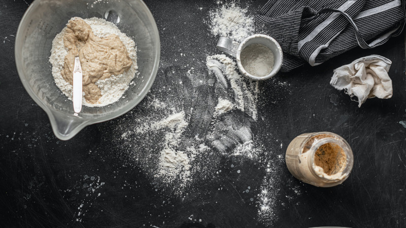

Essential Tools for Sourdough
If you are new to the world of sourdough bread baking, you might be wondering what equipment and tools are needed to bake sourdough bread.
The good news is that you don't need to spend a fortune on kitchen supplies in order to bake sourdough bread successfully.
Here's a list of essential sourdough bread baking tools needed for the easiest and best results:
- Sourdough Starter
- Containers
- Baker's scale
- Batter bowl with lid
- Bench scraper
- Banneton or proofing bowl
- Bowl covers
- Bread lame
- Dutch over
- Long silicone gloves
- Parchment paper
- Cooling rack
- Bread Knife
Sourdough Starter
First things first. In order to make sourdough bread you need a sourdough starter. If you don't have one, head over to the sourdough starter page and get it going.
You also have the choice to buy a sourdough starter. you make your own or buy one, it will take several days until you will be able to bake sourdough bread.
Containers
The sourdough starter can be stored in a variety of different containers. They can be made of glass, plastic, or ceramic containers, just to name a few.
Glass containers with straight edges allow you to see the activity of the starter after it has been fed. Some of my favorites are:
Each of these containers comes with a lid that can be used to cover the starter while it rests. I like to keep two containers handy. One to store the extra starter in the fridge and one to transfer a small amount to feed for a recipe.
Baker's scale
The best method for measuring ingredients for sourdough recipes is to weigh them with a kitchen scale.
Because measuring cups and spoons are not accurate enough, most sourdough recipes provide measurements for flour and water in grams.
Batter bowl with lid
A batter bowl with a lid is an excellent, multi-purpose tool, that can be used for mixing and resting the dough. The clear sides have measurements on the sides and it also allows you to see how much the dough has risen.
Bench scraper
When making sourdough, having a bench scraper and/or a bowl scraper is a must.
A bench scraper can be used to shape the dough, divide the dough, keep it from sticking to the work surface, turn the dough, and much more.
Banneton or proofing bowl
A banneton is a proofing bowl made from organic materials and is anywhere from 8-10" in diameter at the opening. After the dough has had its final shape, it is placed in a proofing bowl for the second rise.
The proofing bowl provides structure to the sides of the dough as it rises so that it keeps its shape when it bakes.
The bowl can be lined with a kitchen towel or floured to prevent the dough from sticking as it rises. Any similar size bowl can be used as a proofing bowl.
Bowl covers
Silicone bowl covers are best for keeping dough covered not only because they can be used over and over again, but they keep the dough from drying out on the surface.
Plastic wrap, plastic shower caps, a damp flour sack towel, or even a plate can also be used to cover a bowl of dough.
Bread lame
A bread lame is a stick-shaped tool that holds a razor on one end that is used to score or slash the dough before it bakes. A very sharp knife can also be used to score the dough.
Because dough will expand at its weakest point as it bakes, it is slashed to control the spot of the expansion.
Dutch Oven
A dutch oven with a lid is used to bake sourdough bread because it mimics a commercial steam oven.
During the first several minutes of baking, steam is released from the dough and trapped inside the dutch oven which gives the dough a better oven spring.
Long silicone gloves
Sourdough baking requires very hot oven temperatures. Invest in a set of long silicone gloves to protect not only your hands but your forearms as well.
Parchment paper
Parchment paper makes it easy to transfer the dough to and from the dutch oven. It also keeps the dough from sticking to the bottom of the baking vessel.
Cooling rack
A cooling rack allows air to circulate around the loaf of bread as it cools.
Bread Knife
The crust of sourdough is thick and can be hard to cut. Invest in a bread knife or use an electric knife to cut sourdough bread.